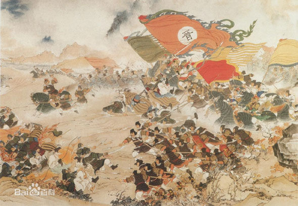
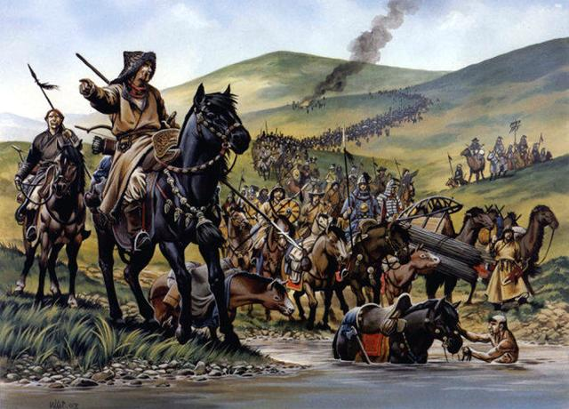
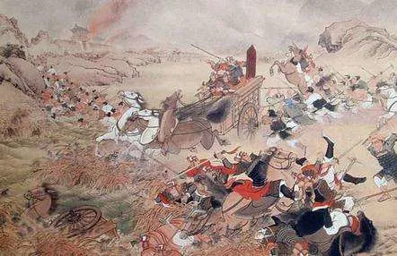
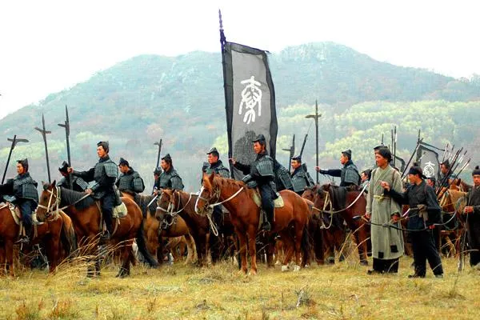
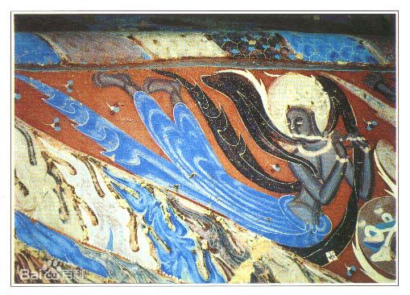
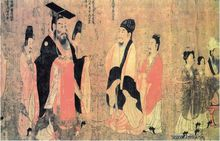

.png)
.png)
- 西晋
- 前赵
- 前秦
- 后秦
- 西魏
- 北周
-
公元266年—公元316年
由于儒教独尊的地位被打破，使得西晋的文化走向多元发展，不断的开发新领域与新学说。 当代学派除儒教外还有由本土发展的玄学、道教及由印度东传的佛教，其中道教及佛教在该期间逐渐扩展到一般人民的生活。 边疆民族的南下带来草原文化。
西晋士族，生活是优裕的，礼法的束缚是疏松的，全国统一以后，闻见也比三国分裂时扩大了。 这些，使得一部分士族中人有条件去从事文化事业。西晋一朝虽极短促，但文化上成就却是巨大的。
西晋时期，社会繁荣豪奢，文学走向雕琢美化。 此时期的作品大都清丽流畅，繁简适中。 著名的有左思的《三都赋》，描写三国都城，内容雄浑闳博，完成后轰动京城。 他的诗歌在艺术及风格十分高超，由于出身并非为有名世族而遭受排挤，在诗歌中显现出憾恨。 潘岳的〈悼亡诗〉内容细腻，情感写实。 -
公元304年—公元329年

经济徙民 汉赵国通过各种手段控制了大批的劳动力，统治者可能将大量荒地及无主之地分配给从事农业的流民，定期征收赋役。 刘曜即位后，还采取了一些促进农业生产发展的措施，如减免百姓租税之半等。汉赵国还设置了大司农、都水使者等农官； 前者主要“掌诸钱谷金帛诸货币”，后者“主陂池灌溉，保守河渠”。
在汉赵社会中，从事农业、手工业、牧业生产的还有奴隶。奴隶的来源主要是战俘，其次是犯罪的官吏。 国内还有大量从事游牧及畜牧业的“六夷”部落。随着归降及征服的“六夷”部落日益增多，设单于台对其进行管理。 总之，汉赵国在经济制度等方面基本上承袭了汉魏以来内地的封建制度； 其国内社会经济主要是农业，其次是畜牧业；其生产方式，沿袭了汉魏以来的生产方式。 -
公元350年—394年
文化: 前秦留心儒学。 苻坚曾下令广收学官，郡国学生只要通晓一经或以上就获授职，亦表彰有才德和努力营田之人，令人们都望得朝廷劝励，崇尚清廉正直，物资亦丰盛。 苻坚更每月亲临太学考拔学生，消灭前燕后更在长安祭祀孔子。 而王猛亦助苻坚整顺风俗，令全国学校渐兴。在苻坚治下的关陇地区丰盛安定，地区回复秩序，工商业兴盛，一片繁华景象。
另亦严厉禁止老庄以及图谶学说。 后来西域大宛献马，苻坚效法西汉汉文帝送还进贡的千里马，更加命群臣作《止马诗》送到西域， 以示没有取千里马的欲望，最终共有四百多人献诗。
疆域 中原地区尽为前秦版土之下，史称“东极沧海，西并龟兹，南包襄阳，北尽沙漠”。 -
公元384年～417年
文化： 394年（建初九年），苌死，长子兴继位，改元皇初。兴重用叔姚绪、姚硕德、弟姚崇及功臣尹纬、狄伯支等。 斩前秦主苻登于泾阳（今甘肃省泾川平凉县西北)。 降服仇池杨盛、上邽姜乳、鲜卑薛勃、西秦乞伏乾归、后凉吕隆，西凉李玄盛皆遣使求和。 与北魏拓跋氏、夏赫连氏时战时和。 在位期间内修政事，广招人才，免奴为良，崇尚儒学，弘扬佛教，使后秦统治地区的社会经济有所恢复和发展，亦促使羌族进一步汉化。
设置律学，调集郡县散吏学习法律，郡县疑狱可上送廷尉审理； 提倡儒学，允许收徒讲授，长安儒生达一万数千人。此外，又大兴佛教，奉命僧鸠摩罗什为国师，译出经论三百余卷，境内佛教大行。经济编辑
经济：当时黄河南北与关中地区是遭受战祸最剧,经济破坏最为严重。 人民不是依附坞堡,成为坞主的部曲，就是迁移至各国首都附近,提供生产或兵役用，各国也会互相掠夺人民、财富以充实国力或是补给军队。 -
公元535年―556年
思想 西魏时期以儒家学说作为思想武器，去除鲜卑族的一些落后习俗和摒弃当时思想领域中风靡一时的空谈玄理、崇佛论道一类的腐朽风习。在京师长安设立国子学，拜儒学大师卢诞为国子祭酒，通过学校教育，培养大批具有儒家思想观念的人士，作为政权的支柱。
六条诏书颁行后，宇文泰令各级官吏学习背诵，规定凡不通六条及计帐之法者，都不能为官，保证了这些措施的实施，刷新了西魏一代政治。
艺术:敦煌石窟第249窟营建时间应在西魏时期。此窟平面方形，覆斗形顶，正壁（西壁）居中开一圆券大龛，龛身较低，这是莫高窟西魏时期新出现的洞窟形制。正壁龛内塑善跏趺坐佛，高2.4米，绘火焰纹背光。 -
公元557年—公元581年
思想文化 在思想文化上宇文泰雅好儒术，以儒家学说作为思想武器，去除鲜卑族的 一些落后习俗和摒弃当时思想领域中风靡一时的空谈玄理、崇佛论道一类的腐朽风习。在京师长安设立国子学，拜儒学大师卢诞为国子祭酒，通过学校教育，培养大批具有儒家思想观念的人士，作为政权的支柱。
还根据先秦典籍《尚书》中的《大诰》一文的格式，制定《大诰》一篇，作为文章的样式，于大统十一年（545年）宣示群臣，明令自今后文章须皆依此体，力图以此矫正浮华文风。
六条诏书颁行后，宇文泰令各级官吏学习背诵，规定凡不通六条及计帐之法者，都不能为官，保证了这些措施的实施，刷新了西魏一代政治。